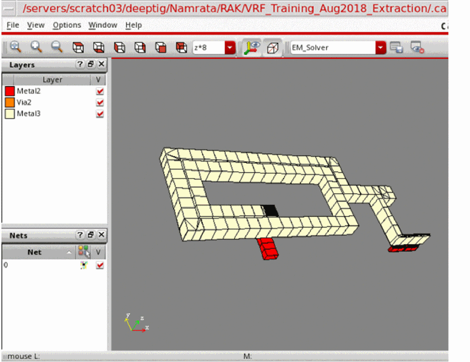
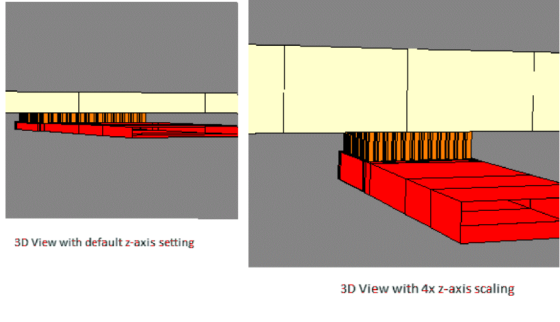

Reviewing the Mesh Created by EMX in Virtuoso 3D Viewer
Before running a simulation for a model, it is recommended that you generate and review the mesh for the datasets selected for the model.
To review the mesh for a new model:
-
Choose Open Simulator – Generate Mesh on the toolbar of the Electromagnetic Solver assistant.
This command creates a mesh and saves it in a.vmeshfile and then it launches Virtuoso 3D Viewer to display the generated mesh.
Alternatively, if the mesh already exists, use the Open Simulator – View 3D Mesh command on the toolbar to open the most recent.vmeshfile in the 3D Viewer.
 - By default, the 3D Viewer displays the mesh in the canvas as a flat view. To view the mesh in 3D, click and hold anywhere in the canvas and drag the pointer slightly in the direction of interest.
- Look for any unintentional opens or shorts in your structure. You can also check how well you have configured your circuit for simulation. The most common problem is over-meshing a structure, which can result in a significantly longer simulation run time.
-
Use the following commands or controls available in the 3D Viewer:
- Use the View toolbar to change the zoom settings or to view the mesh from different directions, such as, top view or right view. By hiding, showing, rotating, and zooming, you can focus on specific items you want to observe in the mesh.
- Rotate the orientation axes at the bottom left of the canvas to set the direction from where you want to look at the mesh.
- To to see thin layers clearly or to view the mesh between the layers, increase the z-axis by choosing a scaling factor on the View toolbar.
-
The following examples shows a comparison of layers in the default view and with the z-axis with 4x scaling.
- Use the Display Options toolbar to control the visibility of wire frames or orientation axes on the canvas.
- Use the check boxes in the Layers assistant to display or hide layers and the shapes on those layers.
- Use the check boxes in the Nets assistant to control the visibility of nets and the metal islands connected to them.
-
Use the Highlight Color command on the Nets assistant to change the coloring mode for nets. By default, the nets and the metal islands connected to them electrically are displayed in the layer color. You can toggle this command to use a unique color for each net and the metal island connected to it.
Related Topics
Return to top